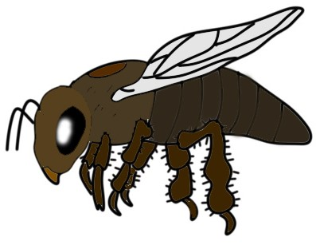
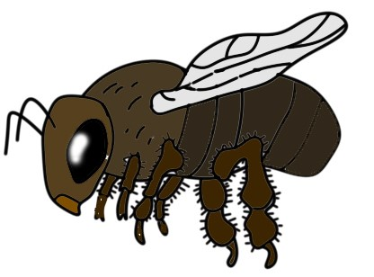

Карпатська бджола
 Історія
Історія
Порода карпатка вважається досить давньою. З початку 90-х років основними продовжувачами робіт по вдосконаленню племінних якостей карпатських бджіл і організації системи їх охорони стали відділ селекції і репродукції карпатських бджіл (м. Мукачеве Закарпатської області) Інституту бджільництва ім. П. І. Прокоповича УААН та Чернівецький опорний пункт Полтавського філіалу інституту. Основні зусилля науковців спрямовані на виділення чистопородних карпатських бджолородин у різних екологічних нішах з метою їх збереження і вдосконалення. Виходячи з назви, легко зрозуміти, що карпатка вперше з’явилася і зайняла місце проживання в гірських районах Карпат (Західна частина України). Також поширеність карпатки знаходиться на високому рівні у Львівській, Закарпатській, Ужгородської та Чернівецької області. Самі елітні особини даної породи мешкають саме високо в горах, де старанно роблять мед і служать на користь людям. Репродукцією маток селекційних ліній займаються Чернівецький, Черкаський, Ворошиловградський бджолорозплідники, бджолокомплекс Цюрупинський Херсонської і Мукачівський Закарпатської областей.
 Господарська характеристика
Порода характеризується підвищеною восковою продуктивністю бджіл.
Навесні сім’ї швидко нарощують силу, інтенсивно використовуючи ранньовесняний медозбір, і зберігають її протягом усього літа. Цю особливість карпатських бджіл використовують для виробництва ранніх пакетів бджіл. Бджоли відрізняються високою продуктивністю на головному взятку (у цьому перевершують інші породи) і «сухою» печаткою меду, переважно білою, іноді змішаною. Прополісування гнізд слабке. Схильні до роїння менше за інші породи, не злобливі і миролюбні (майже весь сезон сім’ї можна оглядати без лицьової сітки і димаря), слабо уражається нозематозом.
Порода визнана однією з кращих, рекомендована для розведення в багатьох зонах з різнотравно-конюшиново-гречаним медозбором.
 Основною особливістю вважається висока продуктивність. Не дивлячись на середню несучість матки, сім’я карпаток за один сезон може принести 50 кілограмів меду, і це тільки середньостатистичний результат. При хорошому взятку карпатська порода бджіл може дати і 80 кілограмів меду з сім’ї за сезон. Як стверджують досвідчені пасічники, карпатська бджола настільки миролюбна, що при огляді вуликів багато хто не користуються димом. В даному випадку комахи спокійно переміщаються по рамках і роблять свою роботу. Також, бджоли пристосовані до пошуків нових скупчень медоносів, погано рояться. За твердженнями експертів, роїння карпаток починається при повній відсутності взятка.
оди вважається той факт, що комахи не вилітають за медом і пилком при поганих погодних умовах. Це дозволяє зберегти кількість робочих бджіл на необхідному рівні. Вони добре виробляють віск, поступаючись тільки італійкам і середньоевропейській породі. Карпатки підходять для запилення тепличних рослин, вони швидко пристосовуються до різноманитного клімату. Також, ця порода пристосована для транспортування на великі відстані, що дуже цінується бджолярами.